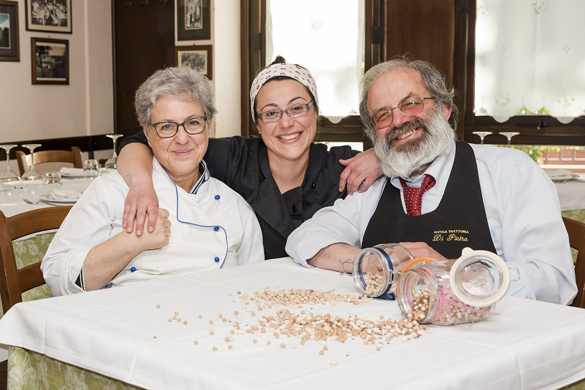
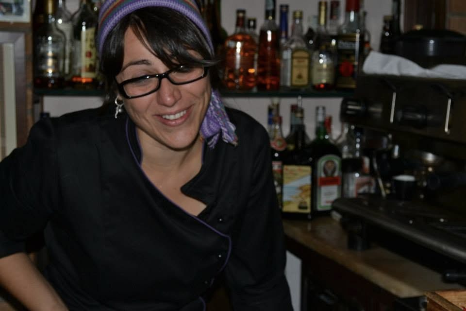

Melito Irpino · Irpinia
Antica Trattoria Di Pietro
Una casa che cucina dal 1934.
Paste fatte a mano, cucina del territorio e delle stagioni. In sala e in cucina c'è la famiglia, come da novant'anni.
🐌 Chiocciola di Osterie d'Italia 2026
Una delle 39 Chiocciole assegnate da Slow Food in Campania. L'elenco ufficiale
Cosa si mangia
La pasta si fa a mano
Anita Di Pietro, che cucina insieme alla madre Teresa, nel 2023 ha raccolto in un libro le paste della cucina popolare irpina: cicatielli, fusilli, ravioli e tagliatelle.
-
Cicatielli
Il formato a cui Anita è più legata. Fra i suoi, i cicatielli con il pulieio, la mentuccia selvatica.
-
Fusilli, ravioli, tagliatelle
Le altre paste fatte a mano che racconta nel suo libro, dalle farine fino alla tavola.
-
Taralli e pomodori
Un piatto di casa: «la semplicità che ci piace».
-
Zuccotto
Il dolce, con gli strati in vista.
Chi cucina
Teresa e Anita
In cucina c'è Teresa, e con lei la figlia Anita, cuoca di quarta generazione.
Anita ha il diploma di cuoca e quello di sommelier dell'Associazione Italiana Sommeliers, le certificazioni avanzate di Slow Food, e ha studiato storia dell'alimentazione italiana all'Università di Scienze Gastronomiche di Pollenzo. La pasta fatta a mano l'ha insegnata in università, scuole e festival, e fuori dall'Italia: Londra, Berlino, Praga, l'Australia, New York.
Nel 2023 ha raccolto tutto in un libro, Storie di paste fatte a mano. L'11 febbraio 2026 il ristorante A16 di San Francisco l'ha invitata a cucinare una sera irpina: conosce questa famiglia da più di vent'anni.
Fonti: A16 San Francisco · il libro

Dal 1934
Quattro generazioni, la stessa casa
Il nonno Pasquale e la nonna Anita, poi il figlio Enzo con la moglie Teresa, e oggi la quarta generazione.
La trattoria apre a Melito Irpino. Da allora è sempre rimasta della stessa famiglia.
Dal nonno Pasquale e dalla nonna Anita l'eredità passa al figlio Enzo e a sua moglie Teresa, che è ai fornelli.
Anita pubblica Storie di paste fatte a mano — Cuoca di una cucina minore (Gruppo Albatros Il Filo).
La trattoria compie novant'anni, con la quarta generazione in cucina.
«90 anni di tradizione, sapori autentici e accoglienza calorosa. Grazie a tutti voi che avete reso questo viaggio possibile.» Antica Trattoria Di Pietro, 2024
La sala, la cucina, la casa
Com'è dentro
Tocca una foto per vederla grande.
Dove siamo
Corso Italia 8, Melito Irpino
Come arrivare
A16 Napoli/Bari, uscita Grottaminarda, poi si prosegue per Melito Irpino.